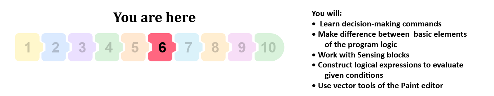
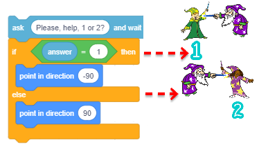
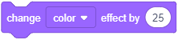
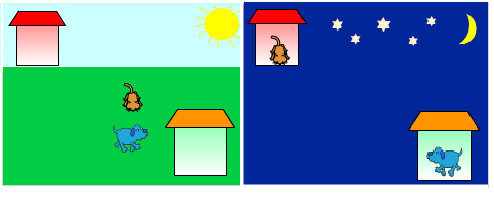
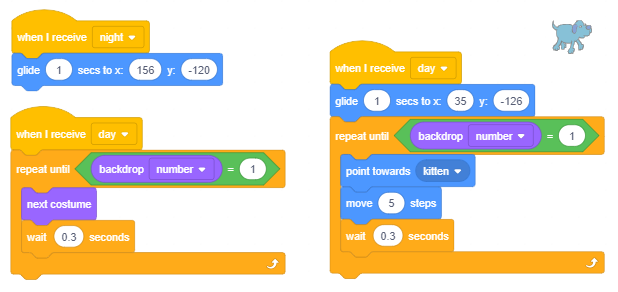

Да или не - вземане на решения¶

В този урок ще научим как да използваме командни блокове, които позволяват разклоняване и как да изградим сложни условия, въз основа на които се вземат решения. Ще систематизираме блоковете, които дават възможност за реализиране на основните елементи на програмната логика в Scratch. Ще се запознаем с още блокове от групата Sensing, както и ще покажем как да използвате редактора на изображения във векторен режим.
Команди с разклоняване
В проекти, които имат проста линейна структура, всяка команда се изпълнява само веднъж. В предишния урок научихме за C-блоковете - блокове, описващи цикъла, които позволяват на другите команди, които са вмъкнати в тях, да се изпълняват многократно. Освен блоковете, описващи цикъла, блоковете, които позволяват разклоняване, имат и вход за скрипт. В зависимост от това дали условието за разклоняване е изпълнено, въведените команди ще бъдат изпълнени или не.
Командата за разклоняване, която съответства на C-блока, има един вход за скрипт, в допълнение към полето за въвеждане на логически изрази. Докато командата за разклоняване, която съответства на E-блока, има два входа за скрипт. Ако условието за разклоняване е изпълнено, първата команда ще позволи изпълнението на команди, въведени в if…then , и ако не, тези команди няма да бъдат изпълнени и програмата ще премине към else част от блока, която описва какво трябва да се направи в случай, че условието не е изпълнено.

Втората команда за условно разклоняване пропуска някои команди в зависимост от това дали условието за разклонение е изпълнено или не. Ако условието е изпълнено, командите от клона NO няма да се изпълняват. Ако условието не е изпълнено, командите от клона ДА не се изпълняват.
Следователно, за разлика от простите линейни програми, където всяка команда се изпълнява точно веднъж, и цикли, където има команди, които могат да се изпълняват многократно (в тялото на цикъла), в програми с разклоняване има команди, които няма да се изпълняват, дори и веднъж.

Основните елементи на програмната логика в Scratch
Както казахме по-рано, скриптите описват поведението на обектите, към които са прикачени. Всички сценарии на поведение, колкото и сложни да са, са съставени от комбинации от основни елементи на програмната логика, това са:
последователности стъпки,
повторение и
разклоняване.
В компютърните науки вместо термина скрипт използваме термина алгоритъм. Терминът алгоритъм е познат от векове, но той придоби специално значение с въвеждането на компютрите. Можем да кажем, че алгоритъмът е всеки набор от разбираеми и точни инструкции за решаване на дадена задача.
Пресичане на улицата, приготвяне на храна, следвайки рецепта, провеждане на телефонно обаждане, решаване на математически проблем - всичко се свежда до изпълнение на отделни елементарни операции в дадена поръчка. В алгоритмите тези елементарни операции се наричат **команди**, стъпки или нареждания.
Алгоритъм може да бъде даден, повече или по-малко точно, чрез използване на думи. Графичният запис на алгоритъм обаче осигурява много по-добър поглед върху структурата и реда, в който се изпълняват инструкциите. Графичната схема, която обозначава със символите си естеството на отделните алгоритмични стъпки, се нарича блок-схема. Блок-диаграмите използват специални символи за запис на отделни типове алгоритмични стъпки.

Основната цел на блок-схемата е да се посочи последователността на изпълнение на отделни алгоритмични стъпки. Той осигурява ясна връзка между детайлите и целия алгоритъм и улеснява откриването на грешки в неговата структура.
Структурата на един алгоритъм може да бъде линейна или може да включва разклонявания или цикли. В алгоритмите с проста линейна структура стъпките се изпълняват една след друга, от началото до края. В алгоритмите с разклоняване има няколко алтернативни маршрути за изпълнение. В зависимост от данните, някои стъпки изобщо няма да бъдат изпълнени. В алгоритмите с цикли някои стъпки могат да бъдат изпълнени многократно.
Следващата фигура показва блокова схема за изчисляване на стойността на x въз основа на дадена входна стойност, с използването на три типа алгоритми: с прости линейни, с разклоняване и с цикли.

Примерите са взети от учебника по математика за втори клас на основното училище. Опитайте се да отговорите на следните въпроси въз основа на тях.
Каква ще бъде стойността на х след изпълнението на всеки от алгоритмите ако входните данни са а=5, и какво ако а=16?
В алгоритъм с разклонение, кои от стъпките няма да бъдат изпълнение ако а=5, и кои ако а=16?
Колко пъти ще бъде изпълнени събирането х=х+3 в алгортъм с цикли ако а=5, и колко пъти ако а=16?
Следващите фигури показват как тези алгоритми биха били написани в Scratch.
Първият алгоритъм, който има линейна структура, съответства на скрипта, който има последователност от стъпки.

Вторият алгоритъм, който има разклоняване, съответства на скрипта, който има разклоняване.

Третият алгоритъм, който има цикли, съответства на скрипта, който има команди за повторение.

Сценариите в Scratch изглеждат като алгоритми, написани с блок-схеми.
Функции на блокове от групата Sensing
Групата Sensing е съставена от блокове, които позволяват на проекта да приема принос от различни устройства, подобно на това, че хората използват сетива, за да събират информация от своята среда. Има блокове, които съхраняват данни, които съответстват на данните, които човек би събирал с усещането за допир, зрение или слух. Някои блокове в тази група позволяват да се задействат различни действия в зависимост от позицията на спрайта, както и в зависимост от времето, датата и т.н. В този урок ще ви представим блоковете, които:
съхранява информация за позицията на спрайта спрямо показалеца на мишката и други обекти,
активирайте входните данни с помощта на клавиатурата,
съхранява информация за текущи операции, извършвани от мишката и клавиатурата.
Останалите блокове от групата Sensing ще бъдат въведени в следващите уроци, а пълен преглед на техните функции е даден в частта Приложение.
 Разгледайте следните примери¶
Разгледайте следните примери¶
Пример 1 - Проект “Избор”¶
В този проект старият съветник трябва да избере асистент.

Той не може сам да реши кой помощник да избере, затова моли потребителя да му помогне, като въведе номера на един от кандидатите.

Тази стойност се сравнява с условното изявление, съдържащо номера на кандидата. Ако потребителят въведе номер 1, съветникът ще се обърне вляво, към кандидат номер 1; в противен случай той ще се обърне надясно към кандидат номер 2.
{kind=link}
Пълният сценарий, описващ поведението на съветника, е представен на фигурата по-долу.

Пример 2 - Проект “Опасни снежинк蔶
Проектът Опасни снежинки е проста игра, при която потребителят се опитва да спаси Снежния човек от големи, опасни и непрекъснато падащи снежинки. Потребителят използва клавишите със стрелки на клавиатурата, за да насочва Снежния човек отляво надясно, като се опитва да избегне снежинки, които падат с различна скорост и ъгъл от горната част на екрана. Ако снежинка докосне Снежния човек, той ще се надуе, формата му ще се деформира и играта ще свърши.
Спрайтове и фонове
Когато стартирате този нов проект, заредете * Склонове * фон и спрайтове * Снежинка * и * Снежен човек * от библиотеката. Поставете спрайта на Снежния човек в долния десен ъгъл на сцената и можете да започнете да програмирате.
Поведение на снежинка
За да се въведе несигурност, е необходимо да се даде възможност на снежинките да се появяват на различни места и да падат с различна скорост и в различни посоки.
Ще постигнем това, като използваме блока  .
.
Снежинка трябва да се появи в горната част на сцената и да се плъзга към дъното. Следващите команди описват това движение.

Първата команда поставя снежинката в положението, за което x координатата ще бъде генерирана произволно. Третата команда определя позицията, към която снежинката ще се плъзга между 0,5 и 3,5 секунди; когато достигне това положение, снежинката ще изчезне.
Ще вмъкнем този стек от команди в цикъла, който ще се повтаря, докато снежинката не докосне Снежния човек. Когато снежинката докосне Снежния човек, играта ще свърши.

Поведение на снежния човек
Снежният човек има три скрипта, прикрепени към него - реакции към потребителя, щраквайки върху зеления флаг, и натискане надясно или клавиша със стрелка вляво на клавиатурата.
В началото Снежният човек дава инструкции как да играе играта и във веригата завинаги проверява дали тя е докосната от снежинка. Ако отговорът е да, той ще излъчи, че играта е приключила и ще спре изпълнението на всички скриптове.

За да направим играта по-привлекателна, ще добавим специални ефекти. Това може да стане с помощта на блоковете от групата Външност.
Както видяхме в пример 2 от урока Последователни стъпки, командата  може да променя спрайта по няколко начина.
Когато снежинката докосне Снежния човек, ще променим размера му и ще приложим ефектите рибешко око и цвят. Ще повторим тези промени пет пъти, като правим пауза за кратко след всяка промяна (фигура А). За да сме сигурни, че Снежният човек не се деформира, когато програмата започне да се стартира отново, в началото ще изчистим всички графични ефекти и зададем размера на 100% (фигура Б).

Пример 3 - Проект “Ден и нощ”¶
В този проект два спрайта, котка и куче, се държат различно в зависимост от това дали е ден или нощ.
На сцената има две малки къщички; една принадлежи на котката и една на кучето. Към тях са добавени два фона - ден и нощ.
На фона ден можете да видите слънцето, светло синьото небе и тревата. На фона нощ всичко, с изключение на къщите, е тъмно синьо, а на небето можете да видите звезди и восъчна полумесец. Дневните и нощните фонове се редуват на всеки 5 секунди.
Когато е денем, котката и кучето излизат от къщите си и се гонят помежду си. Котката тича наоколо в кръг и кучето сочи към котката и се опитва да се приближи до нея.
Когато е нощно време, котката и кучето се връщат към къщите си и продължават да са неподвижни.
{kind=link}
Създаване на спрайтове
Изтрийте Sprite1 и след това качете спрайт Dog2 и спрайт Cat2 от библиотеката. Кучето има три костюма, но ние ще използваме само първите две, така че можете да изтриете третия. Котката има само един костюм и тъй като искаме да направим анимация за движение, ще трябва да нарисуваме още един. За да създадем втория костюм за котката, ще използваме редактора на боите във векторния режим. Като щракнете с десния бутон на мишката върху котешкия спрайт, ще отворим менюто за бърз достъп, от което можем да изберете опцията Дублиране.
По този начин получаваме нов костюм, Cat3, който ще променим със стъпките, представени на следващата фигура.

Създаване на фона
Кликнете върху бутона Изберете фон (отдясно, до спирит спрайт), след което изберете опцията Paint.
От палитрата, съдържаща векторни инструменти, изберете  и режимът на рисуване трябва да изключи цвета на запълване. Начертайте малка къща, както е показано на следната фигура.
и режимът на рисуване трябва да изключи цвета на запълване. Начертайте малка къща, както е показано на следната фигура.

Тъй като сте използвали инструмента за да групирате обектите, които съставляват къщата, можете да използвате инструмента  да го дублирам. След като направите това, поставете копието в долния десен ъгъл на сцената, а оригиналната къща в горния ляв ъгъл.
След това задайте размера на двата спрайта, така че да могат да се поберат вътре в къщите им.
да го дублирам. След като направите това, поставете копието в долния десен ъгъл на сцената, а оригиналната къща в горния ляв ъгъл.
След това задайте размера на двата спрайта, така че да могат да се поберат вътре в къщите им.
Сега ще преминем към рисуването и ще използваме инструмента  . Прилагането на този инструмент, когато става дума за попълване на определени области, не е същото като в растерния (растерния) режим.
Ако зоната не е затворена, в растерен режим боята ще “изтече” върху цялото изображение. Във векторния режим това не се случва - изобщо няма да можете да го рисувате.
Ето защо първо трябва да “затворите” зоната, която искате да рисувате.
Това става с помощта на инструмента
. Прилагането на този инструмент, когато става дума за попълване на определени области, не е същото като в растерния (растерния) режим.
Ако зоната не е затворена, в растерен режим боята ще “изтече” върху цялото изображение. Във векторния режим това не се случва - изобщо няма да можете да го рисувате.
Ето защо първо трябва да “затворите” зоната, която искате да рисувате.
Това става с помощта на инструмента  , трябва да кликнете върху изображението и след това изберете частта от изображението, която не е свързана (2), и я прикрепете към останалата част от изображението (3). След това, с помощта на инструмента , можете да рисувате както вътрешността (4), така и линиите, които формират областта (5).
, трябва да кликнете върху изображението и след това изберете частта от изображението, която не е свързана (2), и я прикрепете към останалата част от изображението (3). След това, с помощта на инструмента , можете да рисувате както вътрешността (4), така и линиите, които формират областта (5).
{kind=link}
Тъй като използвахме инструмента за рисуване не трябва да има проблеми, когато рисуваме.
На следващата фигура можете да видите резултата от боядисването на части от къщата и как се прави.

Когато приключите с боядисването на къщите, умножете този фон.
Ще добавим към първия фон, така че той представлява нощно време, а към втория, така че представлява деня.
Създаване на нощния фон
Начертайте изпълнен тъмносин правоъгълник през целия етап, след което с помощта на инструмента Назад  поставете този правоъгълник зад двете къщи. Същото може да се направи и с инструмента Layer back
поставете този правоъгълник зад двете къщи. Същото може да се направи и с инструмента Layer back  , но ще трябва да щракнете върху сцената толкова пъти, колкото има слоеве в изображението.
Когато и двете къщи са видими, можете да започнете да рисувате луната и звездите.
, но ще трябва да щракнете върху сцената толкова пъти, колкото има слоеве в изображението.
Когато и двете къщи са видими, можете да започнете да рисувате луната и звездите.
На восък полумесец може да се нарисува, като първо нарисувате напълнен жълт кръг (1) и след това частично нарисувате по-голям кръг, изпълнен с цвета на фона (2) върху него.
Една звезда може да бъде създадена, като нарисуваме бял триъгълник (3), който след това можем да дублираме и завъртим (4) и накрая да запълним цялата форма с бяло (5).

Сега можете да копирате готовите звезди и да ги подредите около сцената, някои от тях можете да направите по-малки, а други по-големи. С това нощният фон е завършен.

** Създаване на фона през деня **
Начертайте слънцето с инструмента  , а за лъчите можете да използвате инструмента
, а за лъчите можете да използвате инструмента  . След това нарисувайте голям правоъгълник, изпълнен със светло син цвят, ширината на правоъгълника трябва да бъде същата като на сцената. Поставете обратно толкова слоеве, колкото е необходимо, за да видите всички подробности на сцената.
(Ако трябваше да нарисувате небето първо, а слънцето второ, вие бихте могли да поставите небето правоъгълник в съответния слой по-бързо. По този начин трябва да се върнете под всички лъчи на слънцето).
. След това нарисувайте голям правоъгълник, изпълнен със светло син цвят, ширината на правоъгълника трябва да бъде същата като на сцената. Поставете обратно толкова слоеве, колкото е необходимо, за да видите всички подробности на сцената.
(Ако трябваше да нарисувате небето първо, а слънцето второ, вие бихте могли да поставите небето правоъгълник в съответния слой по-бързо. По този начин трябва да се върнете под всички лъчи на слънцето).
След това нарисувайте правоъгълник, напълнен със зелено, широк като сцената, нарисувайте трева, като го изпратите на фона на изображението.
Процесът на създаване на фона през деня е представен на фигурата по-долу.

Тъй като приключихме със създаването на фона през деня, сега можем да започнем да пишем скрипта, който ще определи поведението на спрайта.
Синхронизиране на събития в деня и нощта на проекта
В този проект поведението е продиктувано от фона. Той излъчва съобщенията ден и нощ, на които отговарят и двамата спрайтове.

Следващите фигури представляват скриптове, добавени към спрайтите, от които можете да видите как реагират на тези съобщения.
{kind=link}

 Разбра ли?¶
Разбра ли?¶
Въпрос 1¶
- да
- не
- Условието 1=1 не е изпълнено.
Q-1: Ще каже ли спрайтът Здравейте след изпълнението на командата за условие?

Въпрос 2¶
- да
- Тъй като стойността на израза 1=2 винаги е невярна, командата от разклонение YES никога няма да се изпълни.
- не
Q-2: Ще каже ли спрайтът Здравейте след изпълнението на командата за условие?

Въпрос 3¶
- 5
- Невярно 5<5
- -5
- Вярно.
- 0
- Вярно.
- 10
- Невярно 10<5.
Q-3: Кой от отговорите на потребителя ще позволи изпълнението на командата в разклонение YES?

Въпрос 4¶
- Донеси чадър.
- Нищо няма да се каже.
- В този случай условието за разклоняване е изпълнено.
Q-4: Какво ще каже спрайтът, ако при запитване Вали ли дъжд?, Потребителят отговаря Да?

Въпрос 5¶
- Условието е изпълнено.
- Усковието не е изпълнено.
- Тъй като стойността на израза А=А е винаги вярна, командата от разклонение YES ще бъде изпълнена.
Q-5: Какво ще каже спрайтът след изпълнението на командата за условие?

Въпрос 6¶
- да
- ъй като стойността на израза А=B винаги е невярна, командата от NO разклонение ще бъде изпълнена.
- не
- Вярно!
Q-6: Ще се появи ли спрайтът след изпълнението на командата за условие?

Въпрос 7¶
- различно, независимо от позицията на спрайта
- И в двата случая условието, което трябва да бъде изпълнено за изречението „Вие сте в центъра на сцената“, е едно и също.
- същото независимо от позицията на спрайта
- Вярно!
- различно, ако y не е 0
- В този случай условието не е изпълнено в нито един от блоковете (A) или (B) и "Вие сте в центъра на сцената" няма да бъде казано.
- различно, ако х не е 0
- В този случай условието не е изпълнено в нито един от блоковете (A) или (B) и "Вие сте в центъра на сцената" няма да бъде казано.
Q-7: Какъв е резултатът от изпълнението на блоковите команди (А) и (В)?

Въпрос 8¶
- Изрично определя, че х = 0 и у = 0.
- Това са координатите на някои от точките по диагонала на координатната система, те могат да бъдат (0,0), но не трябва да бъдат.
- Това са координатите на някои от точките по оста x или y. Може да е и точката, в която те се пресичат, но не е необходимо да бъде.
Q-8: Коя от командите за условие има правилното условие за оператора - координатите на местоположението на спрайта са (0,0), т.е. спрайтът е в центъра на етапа? (Изберете всички верни отговори)

Въпрос 9¶
- Остатъкът след като числото е разделено на 6 е 0.
- Числата 2 и 3 отговарят на това условие, но те не могат да бъдат разделени на 6.
- Числото 11 удовлетворява това условие, но не може да бъде разделено на 6.
- Числото може да бъде разделено на двата прости коефициента на числото 6.
Q-9: В проекта Вземане на решение показахме как се използва операцията mod, за да се провери дали определено число може да бъде разделено на 2. Кое от следните условия ви позволява да проверите дали въведеното от вас число може да бъде разделено на 6? (Изберете всички верни отговори)

 Опитай!¶
Опитай!¶
Упражнение 1¶
Когато се очаква потребителят да въведе някакъв вид информация, трябва да зададем въпрос, който предполага очакваната форма на отговора, например: „Въведете датата си на раждане (dd/mm/yy)“. Формулирайте входните въпроси за въвеждане:
а) Число между 1 и 10.
Число между -1,0 и 2,25.
Име и фамилия.
Тегло.
Височина.
Упражнение 2¶
Програмата, която трябва да изчисли идеалното тегло, изисква от потребителя да въведе своето тегло (в кг) и височина (в см). Напишете части от програмата, които проверяват дали потребителят е въвел правилните данни за теглото, напр. от интервала [40, 160] и височината, напр. [140210].
Упражнение 3¶
Напишете какви трябва да бъдат аргументите на операцията за него да генерира числа от множеството:
а) {0, 1}
{0, 1, 2, 3, … , 10}
{–2, 0, 2, 4, 6, 8}
{0, 10, 20, 30, … , 100}
{0, 0.1, 0.15, 0.26, 0.38, … , 1.0}
Проверете отговорите си, като тествате какво ще се върне подходящата операция за всеки пример в цикъла, който трябва да се повтори 5 пъти.
Инструкции:
Целият блок от команди е даден за пример a), а за останалите само частта, която генерира числа, които трябва да бъдат вмъкнати в блока say.
От пример д) можете да видите, че е достатъчно да поставите само една граница, която има десетична запетая, за да генерирате десетични числа.

Упражнение 4¶
Напишете командата за условие със сложно условие, еквивалентно на следните състави на командите за условие:

Проверете отговорите си, като ги тествате в средата на Scratch.
Упражнение 5¶
Създайте мини-проект, наречен Greater, в който спрайтът моли потребителя да вмъкне число между 1 и 100. Програмата избира число (чрез използване на операторски блок на произволни числа) също между 1 и 100 и след това казва на потребителя, чийто брой е по-голям. Диалогът трябва да бъде иницииран с щракване върху спрайта.
Инструкции:

 Отстранете грешката!¶
Отстранете грешката!¶
Грешка 1¶
- Question
Ученикът искаше да създаде скрипт, който позволява движението на спрайта да се контролира от стрелки. Той / тя написа програмата, показана на фигурата вляво. Тогава студентът забеляза, че командата
 се повтаря 4 пъти, така че той / тя промени сценария в програмата, представена на фигурата вдясно. Ученикът обаче не постигна желаното поведение на спрайта. Къде ученикът направи грешка?
се повтаря 4 пъти, така че той / тя промени сценария в програмата, представена на фигурата вдясно. Ученикът обаче не постигна желаното поведение на спрайта. Къде ученикът направи грешка?
{kind=link}
Отговор:
В променената програма командата ще работи непрекъснато и спрайтът ще се движи в посоката, която е била избрана последна, независимо дали клавишът в тази посока е натиснат или не.
Грешка 2¶
- Question
Студентът искаше да промени поведението на кандидатите за позицията на помощник на магьосника в проекта “Избор”. Когато магьосникът избере момичето, момчето трябва да си помисли „Защо я избра?“. Ето защо той / тя добави следния скрипт към момчето спрайт. Въпреки това, добавената мисъл беше поставена в самото начало на програмата, преди съветникът да избере някого. Как можете да координирате дейностите на момчето и магьосника?

Отговор:
Един от начините е да накарате магьосника да излъчи съобщението, че е взел своето решение, и след това да позволи на момчето да реагира, когато получи това съобщение. Разбира се, ако не искаме момчето да реагира, когато съветникът го избере, тогава трябва да разширим тази комуникация, като добавим частта, в която програмата ще провери кой от кандидатите е избран.

Грешка 3¶
- Question
Ученикът искаше неговият спрайт, който се управлява с клавишите със стрелки наляво и надясно, да продължава да изговаря думата „вляво“, докато е в лявата половина на сцената, и думата „дясно“, докато е в дясната половина на сцената. Той / тя добави следните скриптове към спрайта, но продължаваше да казва същата дума, независимо къде на сцената се намира. Какво трябва да се промени в сценариите?

Отговор:
Програмата проверява на коя половина от етапа се намира спрайтът само в началото. Тази проверка трябва да бъде вмъкната във вечен цикъл.

 Резюме¶
Резюме¶
В този урок научихме за командите за разклоняване, които ви позволяват да създавате скриптове за разклоняване. Представихме блоковете от групата * Sensing * и показахме как командата за въвеждане на данни с помощта на клавиатурата се изпълнява в Scratch. Освен това научихме как да синхронизираме поведението на спрайтите, като използваме излъчване на съобщения. Освен това показахме как да използваме инструмент във векторния режим на вградения редактор на бои.
Нови концепции: структура с разклонения, сложни условия.
Scratch команди:  -
-  ,
,  ,
,  ;
;  -
-  ,
,  ;
;  -
-  ;
;  -
- 
 Създайте проекти¶
Създайте проекти¶
Проект 1 - „Падащи ябълк蓶
Създайте игра със сценарий, подобен на проекта “Опасни снежинки”. Основният спрайт на този проект трябва да бъде спрайт за момче, чието движение се контролира с левия и десния клавиш със стрелки. Той трябва да избягва ябълки, които се появяват на произволни позиции в горната част на сцената и да се плъзга надолу до произволни позиции в долната част на сцената. Ако някоя ябълка докосне момчето във всеки момент, играта ще свърши, ако не го докоснат, те се скриват и отново се появяват в горната част на сцената и се плъзгат надолу. Скоростта на плъзгане също трябва да бъде настроена на случаен принцип, например между 1 и 3 секунди. За да направите играта по-вълнуваща, след като сте направили първия спрайт за ябълки, го умножете, така че има например 3 ябълки, повтарящи подходящото поведение.
Проект 2 - “Гладна акула”¶
Създайте проект, в който спрайтът на акулите гони риба. Акулата трябва да се движи постоянно наляво-надясно и при натискане на интервала трябва да се придвижва нагоре. Ако спрайтът на акулите докосне риба, рибата ще изчезне и след това отново ще се появи след 3 до 5 секунди в произволна позиция. Различната продължителност на паузата между изчезването и повторното появяване на риба и различни места може да се постигне с помощта на операцията * произволно число . Спрайтът на акулите (Shark2) има три костюма, така че смяната на костюма може да представлява реакцията на акулата, когато докосне риба. Приписвайте различно движение на рибите спрати, спратите на раците и спратите на медузите. Медузите трябва да се движат нагоре и надолу, раците трябва да се движат наляво и надясно, а рибите трябва да се движат с различна скорост. Всички спрайтове - акула, различни видове риба, раци и медузи, както и фона могат да бъдат взети от библиотеките на спрайтове и фонове. Можете да направите различни видове риба, като използвате различни костюми на спрайта *Риба.
Проект 3 - “Куче и котка”¶
Създайте проект, в който ще използвате два спрайта - куче и котка, както и два фона. В началото котката бавно се движи наляво и надясно между краищата на сцената и мислите й трябва да се появят в облака на блока `` мисля ‘’. След 10 секунди кучето спрайт трябва да се появи, то започва да лае и това плаши котката. Котката започва да тича и когато достигне ръба на сцената с първия фон, вторият фон трябва да се появи. Когато котката пресече целия етап с новия фон, тя трябва да изчезне, това означава, че котката е успяла да се скрие. Едва когато това е направено, кучето ще се появи на сцената, ще спре и в облака на блока `` мисля ‘’ ще се появи въпросителен знак.
За да създадете този проект, трябва да:
напишете скриптове, описващи поведението на котешкия спрайт,
качете кучешки спрайт от библиотеката на спрайтове и добавете към него аудио файл с лай заедно със скриптове, описващи неговото поведение,
качете два фона, Игрално поле и Градинска скала: първата, където котката среща кучето, и втората, където котката избяга, когато чуе лай на кучето,
синхронизиране на кучешки лай и реакцията на котката към него - котката бяга,
синхронизиране на “поведението” на двата фона, т.е. в момента, в който те се променят.